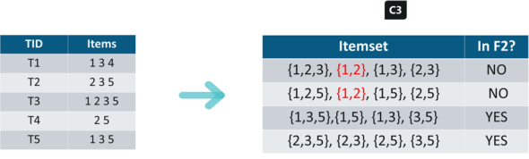

In today’s world, the goal of any organization is to increase revenue. Can this be done by pitching just one product at a time to the customer? The answer is a clear no. Hence, organizations began mining data related to frequently bought items.
Market Basket Analysis is one of the key techniques used by large retailers to uncover associations between items. They try to find out associations between different items and products that can be sold together, which gives assisting in right product placement. Typically, it figures out what products are being bought together and organizations can place products in a similar manner. Let’s understand this better with an example:
People who buy Bread usually buy Butter too. The Marketing teams at retail stores should target customers who buy bread and butter and provide an offer to them so that they buy the third item, like eggs.
So if customers buy bread and butter and see a discount or an offer on eggs, they will be encouraged to spend more and buy the eggs. This is what market basket analysis is all about.
This is just a small example. So, if you take 10000 items data of your Supermart to a Data Scientist, Just imagine the number of insights you can get. And that is why Association Rule mining is so important.
Association rules can be thought of as an IF-THEN relationship. Suppose item A is being bought by the customer, then the chances of item B being picked by the customer too under the same Transaction ID is found out.
There are two elements of these rules:
Antecedent (IF): This is an item/group of items that are typically found in the Itemsets or Datasets.
Consequent (THEN): This comes along as an item with an Antecedent/group of Antecedents.But here comes a constraint. Suppose you made a rule about an item, you still have around 9999 items to consider for rule-making. This is where the Apriori Algorithm comes into play. So before we understand the Apriori Algorithm, let’s understand the math behind it. There are 3 ways to measure association:
Support: It gives the fraction of transactions which contains item A and B. Basically Support tellsus about the frequently bought items or the combination of items bought frequently.
So with this, we can filter out the items that have a low frequency.
Confidence: It tells us how often the items A and B occur together, given the number times A occurs.
Lift: Lift indicates the strength of a rule over the random occurrence of A and B. It basically tells us the strength of any rule.
Focus on the denominator, it is the probability of the individual support values of A and B and not together. Lift explains the strength of a rule. More the Lift more is the strength. Let’s say for A -> B, the lift value is 4. It means that if you buy A the chances of buying B is 4 times. Let’s get started with the Apriori Algorithm now and see how it works.
Apriori algorithm uses frequent itemsets to generate association rules. It is based on the concept that a subset of a frequent itemset must also be a frequent itemset. Frequent Itemset is an itemset whose support value is greater than a threshold value(support).
Let’s say we have the following data of a store.
Iteration 1: Let’s assume the support value is 2 and create the item sets of the size of 1 and calculate their support values.
As you can see here, item 4 has a support value of 1 which is less than the min support value. So we are going to discard {4} in the upcoming iterations. We have the final Table F1.
Iteration 2: Next we will create itemsets of size 2 and calculate their support values. All the combinations of items set in F1 are used in this iteration.
Itemsets having Support less than 2 are eliminated again. In this case {1,2}. Now, Let’s understand what is pruning and how it makes Apriori one of the best algorithm for finding frequent itemsets.
Pruning: We are going to divide the itemsets in C3 into subsets and eliminate the subsets that are having a support value less than 2.

Iteration 3: We will discard {1,2,3} and {1,2,5} as they both contain {1,2}. This is the main highlight of the Aprior Algorithm.
Iteration 4: Using sets of F3 we will create C4.
Since the Support of this itemset is less than 2, we will stop here and the final itemset we will have is F3.
Note: Till now we haven’t calculated the confidence values yet.
With F3 we get the following itemsets:
For I = {1,3,5}, subsets are {1,3}, {1,5}, {3,5}, {1}, {3}, {5}
For I ={2,3,5}, subsets are {2,3}, {2,5}, {3,5}, {2}, {3}, {5}
Applying Rules: We will create rules and apply them on itemset F3. Now let’s assume a minimum confidence value is 60%.
For every subsets S of I, you output the rule
{1,3,5}
Rule 1: {1,3} –> ({1,3,5} – {1,3}) means 1 & 3 –> 5
Confidence = support(1,3,5)/support(1,3) = 2/3 = 66.66% > 60%
Hence Rule 1 is Selected
Rule 2: {1,5} –> ({1,3,5} – {1,5}) means 1 & 5 –> 3
Confidence = support(1,3,5)/support(1,5) = 2/2 = 100% > 60%
Rule 2 is Selected
Rule 3: {3,5} –> ({1,3,5} – {3,5}) means 3 & 5 –> 1
Confidence = support(1,3,5)/support(3,5) = 2/3 = 66.66% > 60%
Rule 3 is Selected
Rule 4: {1} –> ({1,3,5} – {1}) means 1 –> 3 & 5
Confidence = support(1,3,5)/support(1) = 2/3 = 66.66% > 60%
Rule 4 is Selected
Rule 5: {3} –> ({1,3,5} – {3}) means 3 –> 1 & 5
Confidence = support(1,3,5)/support(3) = 2/4 = 50% <60%
Rule 5 is Rejected
Rule 6: {5} –> ({1,3,5} – {5}) means 5 –> 1 & 3
Confidence = support(1,3,5)/support(5) = 2/4 = 50% < 60%
Rule 6 is Rejected
This is how i create rules in Apriori Algorithm and the same steps can be implemented for the itemset {2,3,5}.